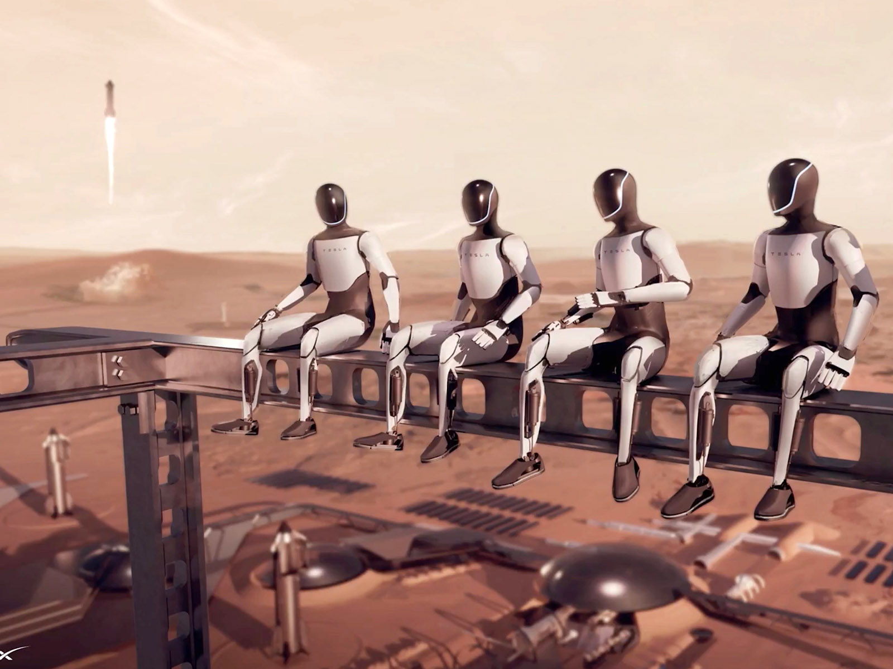

Uitgelichte Projecten

GPTars: TARS met ChatGPT
Een replica van de TARS-robot uit Interstellar, uitgebreid met AI via de ChatGPT API voor dynamische interacties.
Meer details →

Workshops
Een overzicht van gevolgde workshops, van digitale tweelingen en PLC's tot strategische roadmapping en cybersecurity.
Bekijk workshops →